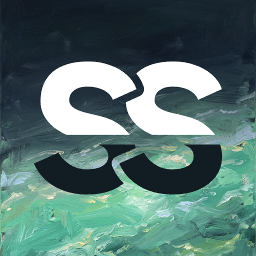

Playbook step 11. Each sting runs 4 seconds on rio-negro, then holds and loops. Timing and easing come from the motion tokens (ease.in-out, ease.expo, ease.fade, spring.crit). With reduced motion every sting shows its last frame. Reduced motion is on: these are the end frames.
A · Waterline. The waterline draws across, the word rises out of it and its igarapé half settles below.B · The crossing. A dot crosses on the waterline and the word appears behind it. It lands as the dot of the i.

C · Mark first. The mark on painted water settles, then the wordmark slides out beside it.